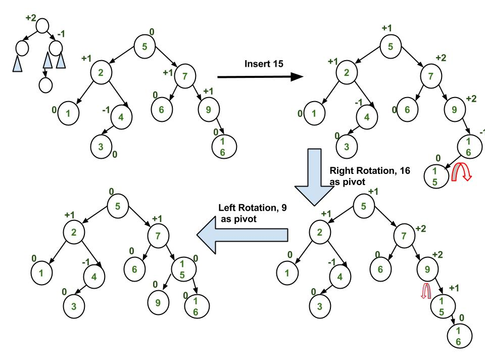

AVL_Tree
AVL_Tree use a method that comapres the height of each node to self-balance the tree. For each node, the difference between height of left and right subtree cannot be more than 1.

Rebranching
Follow normal binary search tree insertion, but after the process, needs to rebalance the tree so the height property still the same. If left subtree has to many levels, rotate the upper most node that doesn't correspond to the height rule to the right. Vice versa for right subtree. Operation is quick as runtime is O(1).

Double Rotation
Need to have a retrace function to go check each nodes' height differencce with each other everytime you insert to make sure the height property is remained, so operations on it would be O(logN).